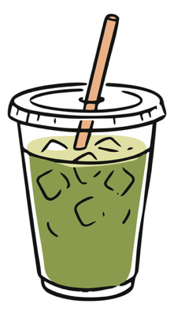

Navigating Leadership
For people managing teams, balancing expectations and finding their own approach to leadership, whether they're new to the role or have years of experience.
For ambitious creatives looking for clarity, direction and practical support.
Creative Leadership & Personal Development Mentor | Christina Lawson

Who I work with
I work with creative professionals, managers and individuals navigating leadership, career development and personal growth. Whether you're taking on new responsibilities, exploring your next steps or looking to develop your own approach, mentoring is tailored to your experience and ambitions.
For people managing teams, balancing expectations and finding their own approach to leadership, whether they're new to the role or have years of experience.
For people looking to develop their skills, recognise their strengths, build on their experience and become more intentional about their professional development.
For people considering a career change, taking on new opportunities or reassessing what they want from their professional lives.
For people with goals, ideas or ambitions who would benefit from some structure, accountability and practical support to make progress.
What can mentoring offer you?
Even the most capable people benefit from a fresh perspective. Mentoring gives you dedicated time to focus on yourself, explore your ideas and gain a different perspective. Whether you're navigating a challenge, considering your next steps or working towards a goal, having someone in your corner can help you move forward with greater clarity and intention.
Time away from everyday demands to focus on your own thoughts, priorities and personal development.
Gain new insights, challenge your assumptions and help you see things from another angle.
An opportunity to better understand your strengths, motivations, tendencies, and what matters most to you.
Turn ideas into achievable steps, with structure, encouragement and ongoing support.
How we'll work
Whether you're navigating a leadership challenge, exploring your personal development or working towards a goal, we'll combine thoughtful reflection with practical strategies to help you find clarity and move forward.
Five ways to explore your growth, development and leadership. PRISM is one of the frameworks we'll use together to establish your goals and create action.
A deeper layer of self-discovery
If you're curious to explore your personal development from another angle, we can also use Human Design as a reflective exercise to consider your strengths, motivations and working preferences. Rooted in astrology and spiritual traditions, it's an optional tool for deeper self-reflection on your development journey.
Ways to work together
Whether you need a fresh perspective on a specific challenge, space to focus on your development, or accountability to reach your goals, there's a way we can work together.
A focused session to explore a specific challenge, gain a fresh perspective and find clarity on your next steps.
You'll receive:
Ongoing mentoring to develop your leadership style, management skills and confidence in supporting your team.
You'll receive:
An interactive workshop to explore team values, motivations and ways of working.
You'll receive:
About me
A creative management professional with over eight years of experience across Australia, the UK and Europe.
I know what it's like to balance the needs of your team with expectations from above. Today, I use that experience to help creative professionals build confidence, develop their skills and find their own approach to leadership and growth.
If you're here, then I'm guessing that you really care about how you show up in the world. You want to do a good job, make thoughtful decisions and support the people who rely on you. And sometimes, you need a little support yourself.
That's where I come in. I offer practical mentoring, personalised development, accountability support, and a fresh perspective to help you navigate challenges, make confident decisions and turn your goals into meaningful progress.

Whether you're navigating leadership, working towards a goal or looking for a fresh perspective, I'd love to hear what you're working through.
A relaxed 15-minute chat to get to know each other, discuss what you need and see how I can help.
Book my free 15-min callNo preparation or commitment needed.
Based in Lisbon | Working with clients across the UK, EU, & AUS.